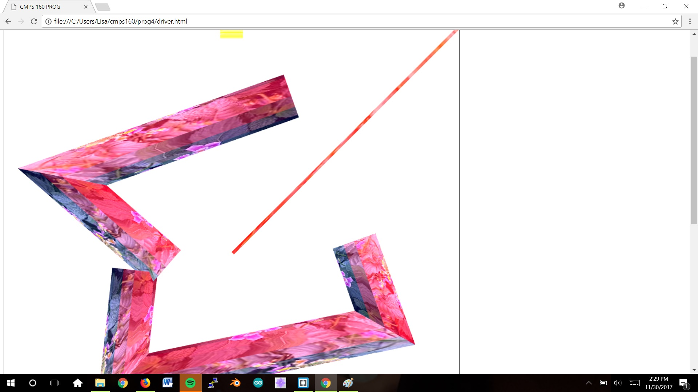
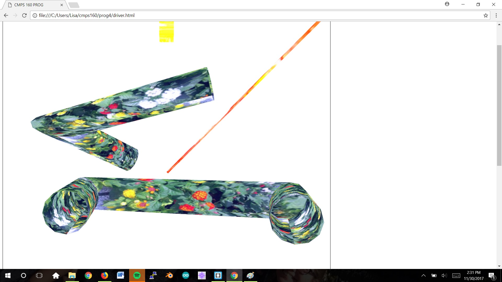

Create a blank (white) canvas at least 500 x 500 in dimension.
Recognize left and right mouse clicks. Terminates polyline on right mouse click.
Draw rubberband line between the last point and the current mouse position.
Rotates 12 coordinates around point and prints out array to console.
Translates 12 coordinates from unit cylinder to the left mouse points and prints array to console.
Creates an index array and prints it to the console.
Creates a vertex array with both indices and coordinates for each index to connect and prints array to console.
Stores GC
Calculates surface normals and colors of polygons
Displays surface normals on toggle
Displays shaded cylinders
Provides user option to toggle between flat/smooth and specular shading.
Has a slider to display different levels of glosiness for specular shading
Has visual representation of directional and point light sources
Allows user to click on light source to turn on or off the light
Calculates point light source for flat and smooth shading and under the condition that specular is being used
Toggles between orthographic and perspective view
Allows user to load multiple GCs on canvas
Allows translation, scaling, and rotating of the GCs as separtate objects and also allows saving of the file
When no object is picked, on a left mouse click and drag, the user can pan the scene in both orthographic and perspective
When no object is picked, when the user uses the scroll wheel, the scene zooms in and out in both orthographic and perspective
When no object is picked, clicking with the middle mouse button and scrolling changes the camera position until the objects on screen are out of the field of view (visible only in perspective)
Implements texture mapping on cylinders when any of the image buttons are clicked. Maintains lighting and user can change specular lighting, add normals, switch to perspective, and toggle between perspective and orthographic while object is texture mapped.
Cannot pick textured objects and transform them.
Move mouse around canvas and left-click to create a rubberband line. Move the mouse again to decide where to place a rubberband line on the next left mouse click. Coordinates are calculated to generate a cylinder between the last and most recent mouse clicks. The polyline is completed when the user right clicks and 3D cylinders are formed with light. The user can also save a file, choose the file, and extract the file. If the user enables normals, the normal vectors will be displayed. The user can toggle between flat/smooth shading. The user can also enable specular shading and change the glossiness with the slider. The user can click on the yellow cube to turn off or on the point light source as well as click the light bar to turn off or on the directional light source. User can also toggle between perspective and orthographic view. User can load multiple GCs onto the canvas and can manipulate them by translating(left clicking and dragging or holding down the middle mouse button and dragging), rotating(right clicking and dragging horizontally or vertically), and scaling(zooming in and out with the scroll wheel). The user can then save the complex object. The user can scroll without an object selected to zoom in and out of the scene. The user can left click and drag the mouse when no object is selected to pan the scene. The user can click on the middle mouse wheel and scroll when no objects are selected to move the camera in and out until the objects are out of the field of view, which is only visible in perspective view. The user can click on any of the image buttons to add a texture to the cylinders. Can also disable the texture by clicking on the texture off button.
None.
 